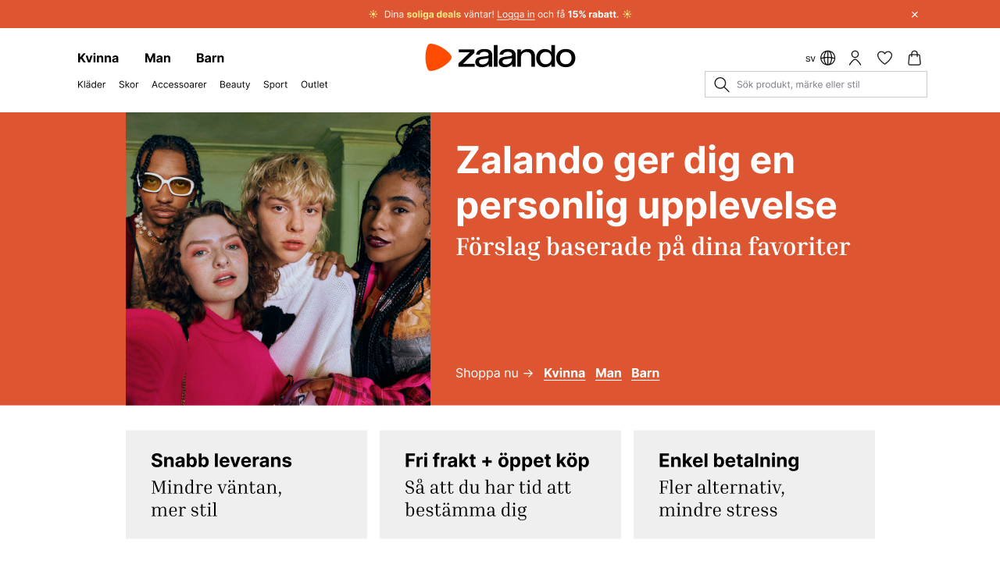
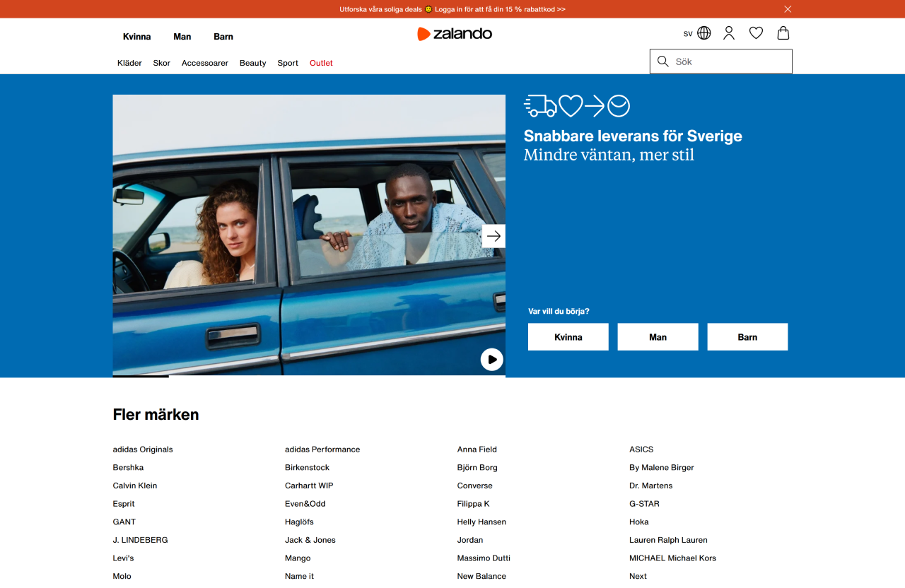
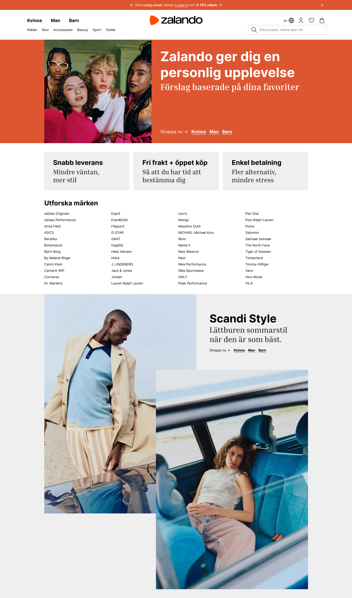

Zalando Landing Page
Zalando's landing page serves as the site's only gender-neutral entry point and is primarily designed to guide users toward a category choice. This redesign focuses on improving clarity and orientation for first-time visitors without changing the page's original purpose.

Carousel
The carousel hides useful information and limits readability. It is replaced with static content blocks with clear hierarchy.
Promotional Banner
The banner was made slightly bigger and bolder, and the wording was changed to speak directly to the user.
Header
Alignment issues between "Kläder" and "Kvinna" were corrected. The logo was enlarged, spacing adjusted, and the search field made cleaner.
Navigation
"Outlet" appeared active despite not being selected. This false state was removed, and Outlet is shown as page content instead of an active navigation item.

Categories as content
Categories hidden on the landing page but available elsewhere on the site are added as page content. This provides more opportunity for exploration without increasing coginitive load.